← 返回阅读库 · 原论文目录
论文讲解阅读文档 · 论文精读 · v228
国运之争！深度剖析《2026斯坦福AI报告》
视频时长 00:09:41；讲解文字 3,457 字符；提取讲解画面 168 张。按视频原顺序阅读，每段文字保留时间戳。
文字来自整段视频的自动语音转写，按自然停顿分段，并与 PPT / 论文页面 / 演示画面对齐。未将讲解压缩为摘要；术语、数字和口述公式请结合画面及原论文核对。 阅读稿已校正规范部分明确术语误识别；原始逐字稿和每处修改记录另行保留。
讲解画面为源视频截图（640×360），不是可编辑 PPT 文件。全片按每秒 2 帧扫描内容变化，逐步展开页保留；连续动画保留代表画面。清晰度受源视频限制。
下载完整资料包 · 含离线 HTML、PDF、Word、全部 PPT 画面和字幕。
原论文与材料
The 2026 AI Index Report · 下载完整 PDF（425 页）
按时间阅读
00:00:00–00:00:04 · 画面 001
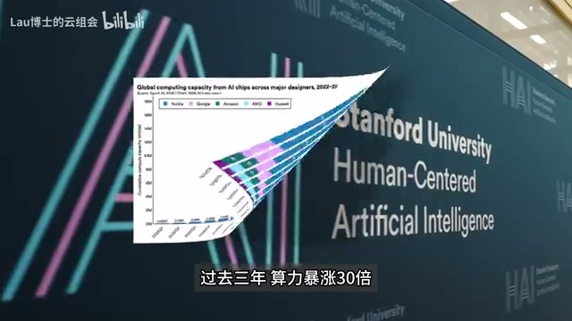
00:00:00–00:00:04 · 画面 001过去三年算力暴涨 30 倍 90%顶尖模型出自公司而非高校中美的差距仅剩 2.7%AI 在中国职场的渗透率破 80%失业率却在显著的增加大家好我是六博士以上数据全部来自刚发布的 2026 斯坦福 AI 指数报告 423 页 12 大维度这只是冰山一角
00:00:04–00:00:08 · 画面 002
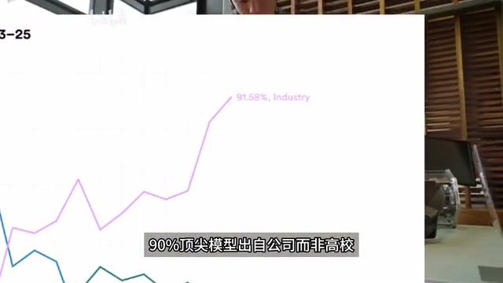
00:00:04–00:00:08 · 画面 00200:00:08–00:00:12 · 画面 003
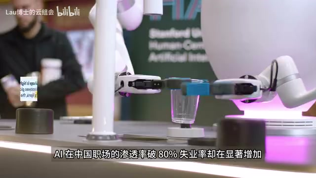
00:00:08–00:00:12 · 画面 00300:00:12–00:00:16 · 画面 004
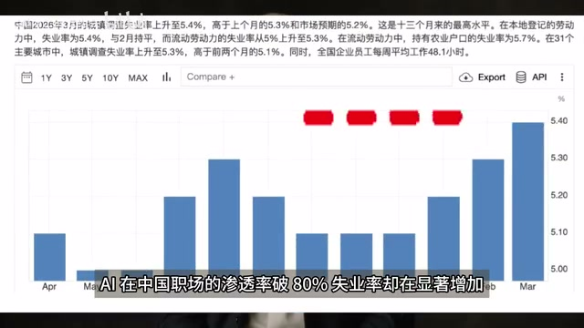
00:00:12–00:00:16 · 画面 00400:00:16–00:00:19 · 画面 005
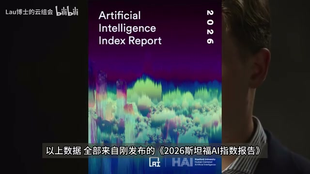
00:00:16–00:00:19 · 画面 00500:00:19–00:00:23 · 画面 006
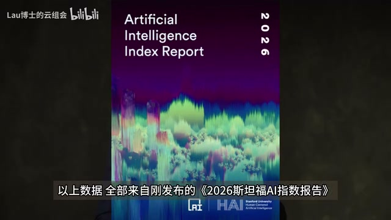
00:00:19–00:00:23 · 画面 00600:00:23–00:00:27 · 画面 007
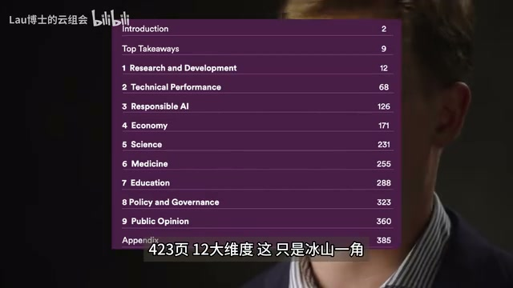
00:00:23–00:00:27 · 画面 007四年前李沐老师也曾解读过 2022 版的报告，那四年过去了，中美 AI 的纯实力差距到底有多大？还有哪些痛点难点没有解决？AI 给我们的生活带来了哪些看不见的影响？我精选了报告中最精华的部分，希望能给你带来启发。那话不多说，接下来正式进入本期云组会。先看这张图，中美模型性能对比，2023 年 5 月，GPT-4 以 1300 多分领跑。
00:00:27–00:00:31 · 画面 008
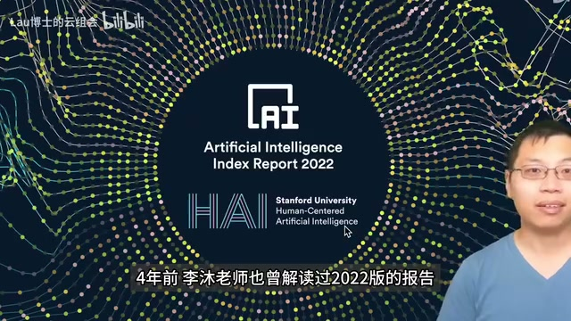
00:00:27–00:00:31 · 画面 00800:00:31–00:00:33 · 画面 009
00:00:31–00:00:33 · 画面 00900:00:33–00:00:37 · 画面 010
00:00:33–00:00:37 · 画面 01000:00:37–00:00:41 · 画面 011
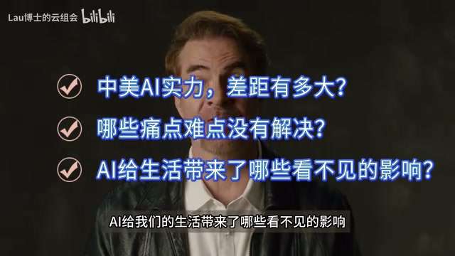
00:00:37–00:00:41 · 画面 01100:00:41–00:00:45 · 画面 012
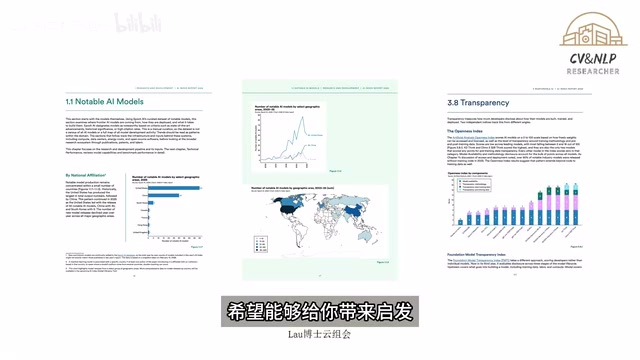
00:00:41–00:00:45 · 画面 01200:00:45–00:00:49 · 画面 013
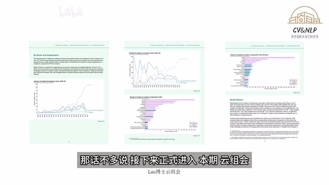
00:00:45–00:00:49 · 画面 01300:00:49–00:00:52 · 画面 014
00:00:49–00:00:52 · 画面 01400:00:52–00:00:53 · 画面 015
00:00:52–00:00:53 · 画面 01500:00:53–00:00:55 · 画面 016
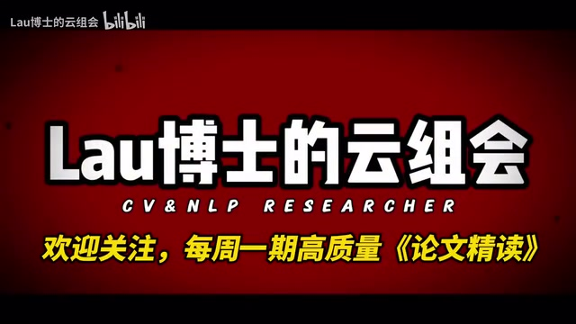
00:00:53–00:00:55 · 画面 01600:00:55–00:00:56 · 画面 017
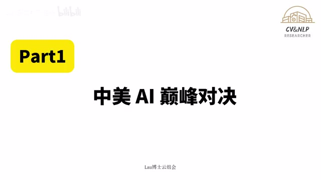
00:00:55–00:00:56 · 画面 01700:00:56–00:01:00 · 画面 018
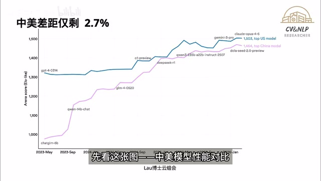
00:00:56–00:01:00 · 画面 01800:01:00–00:01:01 · 画面 019
00:01:00–00:01:01 · 画面 01900:01:01–00:01:03 · 画面 020
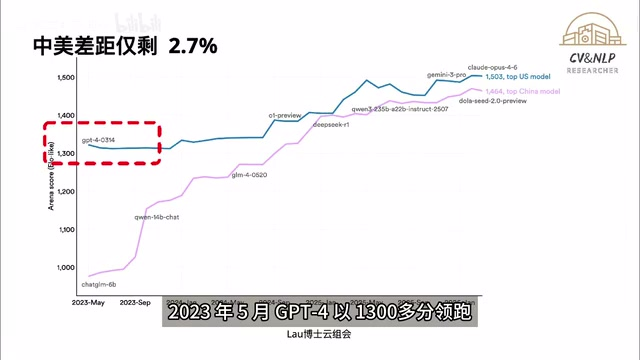
00:01:01–00:01:03 · 画面 020当时中国最好的模型是 ChatGLM-6B 差距 300 多分 2025 年 2 月 DeepSeek R1 第一次和美国头部模型短暂打平到了 2026 年 3 月美国的 Anthropic Claude Opus 4.6 拿到了 1503 分中国的 Dola-Seed-2.0 Preview 拿到了 1464 分
00:01:03–00:01:05 · 画面 021
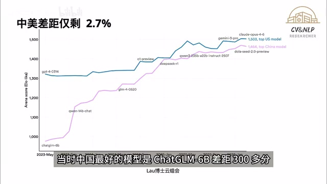
00:01:03–00:01:05 · 画面 02100:01:05–00:01:07 · 画面 022
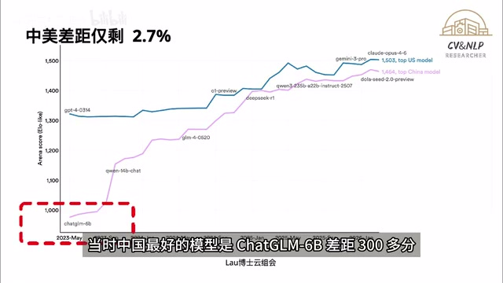
00:01:05–00:01:07 · 画面 02200:01:07–00:01:10 · 画面 023
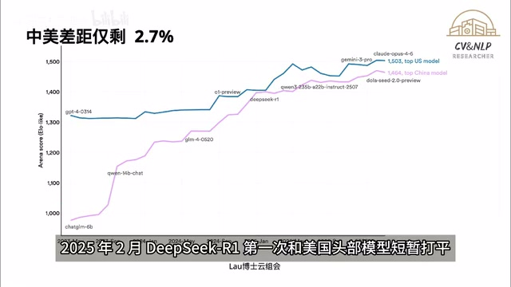
00:01:07–00:01:10 · 画面 02300:01:10–00:01:12 · 画面 024
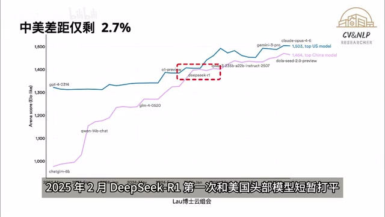
00:01:10–00:01:12 · 画面 02400:01:12–00:01:16 · 画面 025
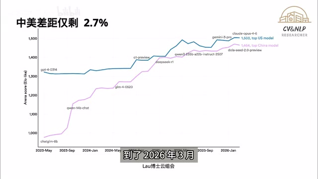
00:01:12–00:01:16 · 画面 02500:01:16–00:01:20 · 画面 026
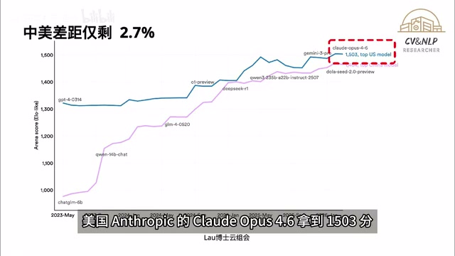
00:01:16–00:01:20 · 画面 02600:01:20–00:01:21 · 画面 027
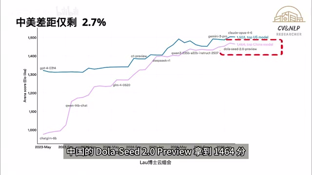
00:01:20–00:01:21 · 画面 02700:01:21–00:01:25 · 画面 028
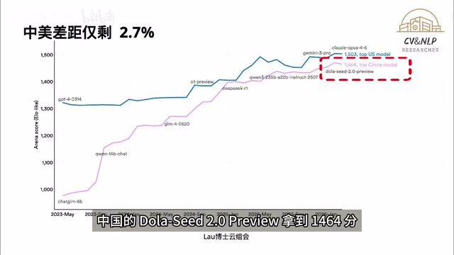
00:01:21–00:01:25 · 画面 028两者的差距仅有 39 分换算成百分比就是 2.7%我们再来看交替领先的频率从 2025 年初开始两国的头部模型在 ARENA 的榜上你来我往已经换了好几次位置数量上同样接近五五开 2025 年美国发布了 50 个显著模型中国发布了 30 个顶尖大模型全球的 Top5 为 OpenAI、Google、Ali、Anthropic、xAI
00:01:25–00:01:27 · 画面 029
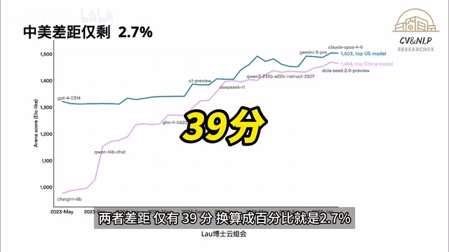
00:01:25–00:01:27 · 画面 02900:01:27–00:01:29 · 画面 030
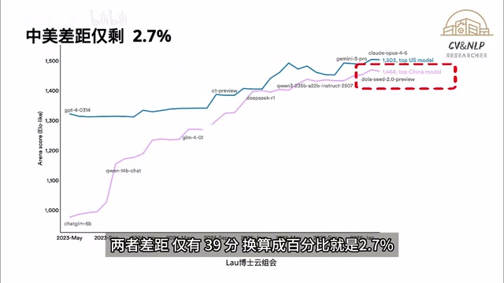
00:01:27–00:01:29 · 画面 03000:01:29–00:01:33 · 画面 031
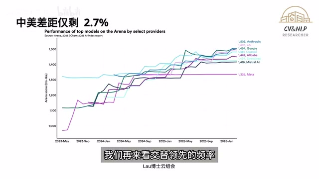
00:01:29–00:01:33 · 画面 03100:01:33–00:01:37 · 画面 032
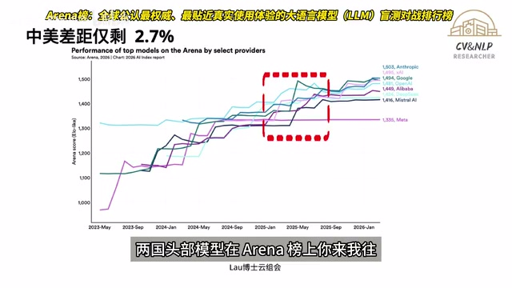
00:01:33–00:01:37 · 画面 03200:01:37–00:01:38 · 画面 033
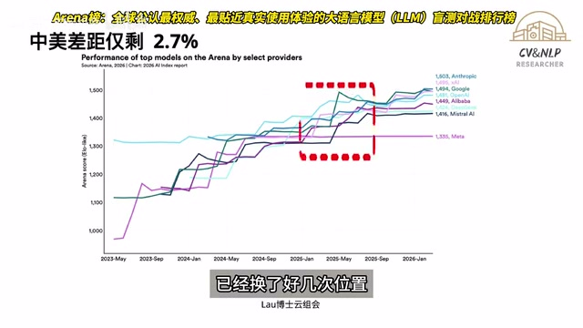
00:01:37–00:01:38 · 画面 03300:01:38–00:01:41 · 画面 034
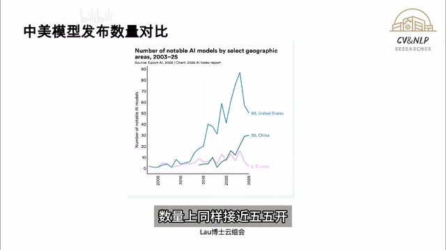
00:01:38–00:01:41 · 画面 03400:01:41–00:01:43 · 画面 035
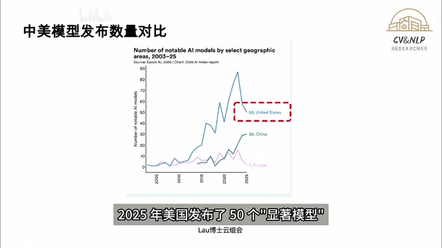
00:01:41–00:01:43 · 画面 03500:01:43–00:01:44 · 画面 036
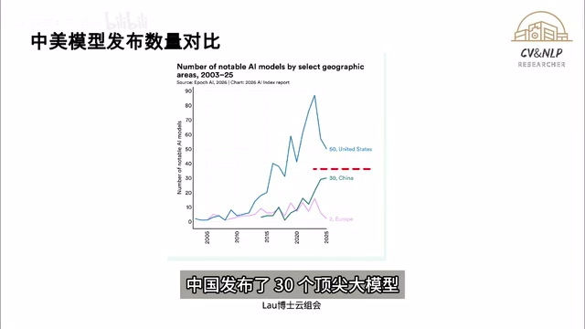
00:01:43–00:01:44 · 画面 03600:01:44–00:01:46 · 画面 037
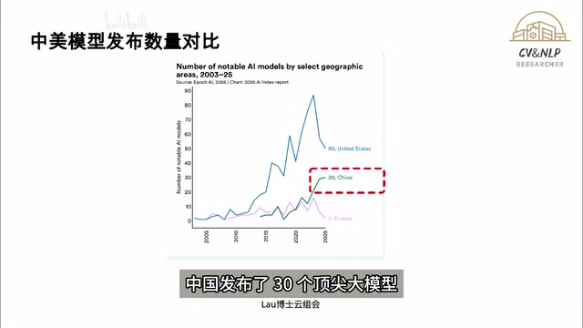
00:01:44–00:01:46 · 画面 03700:01:46–00:01:54 · 画面 038
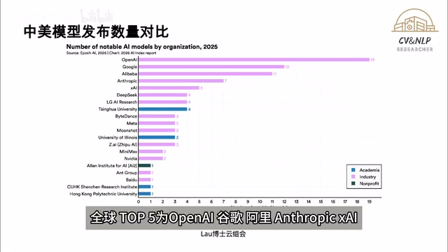
00:01:46–00:01:54 · 画面 038而全球的 Top10 中国占了 4 席，开源生态的重心也在明显的东移。DeepSeek、千问等国产模型一路把开源权重的能力曲线往前推。再算上论文的发表量、被引量，专利的产出量、工业机器人装机量，中国统统全球第一。那在价格层面呢？海外开发者在 X 上算过一笔账，Seed 2.0 Pro 的输出价格大约只有 Claude Opus 4.6 的十分之一。
00:01:54–00:01:57 · 画面 039
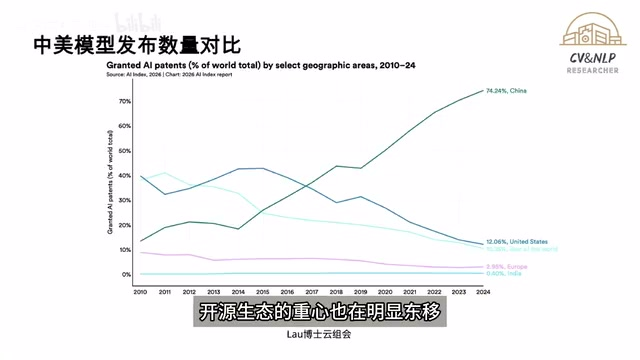
00:01:54–00:01:57 · 画面 03900:01:57–00:02:01 · 画面 040
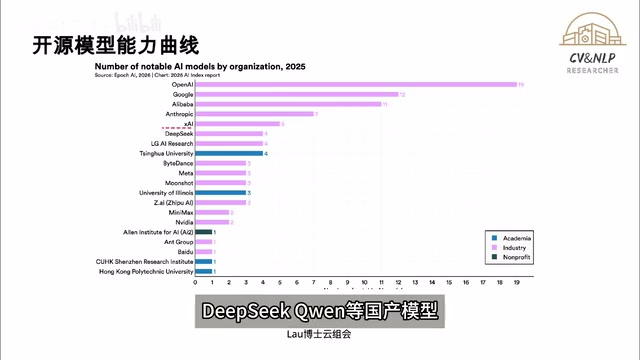
00:01:57–00:02:01 · 画面 04000:02:01–00:02:03 · 画面 041
00:02:01–00:02:03 · 画面 04100:02:03–00:02:07 · 画面 042
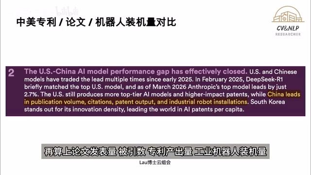
00:02:03–00:02:07 · 画面 04200:02:07–00:02:08 · 画面 043
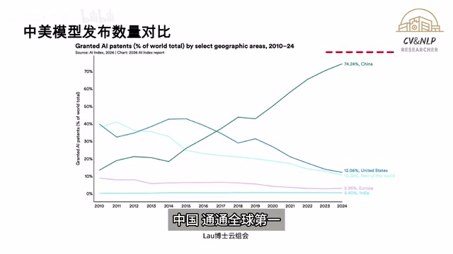
00:02:07–00:02:08 · 画面 04300:02:08–00:02:10 · 画面 044
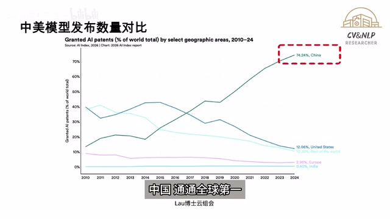
00:02:08–00:02:10 · 画面 04400:02:10–00:02:14 · 画面 045
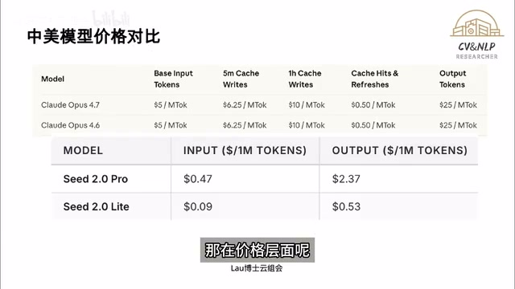
00:02:10–00:02:14 · 画面 04500:02:14–00:02:17 · 画面 046
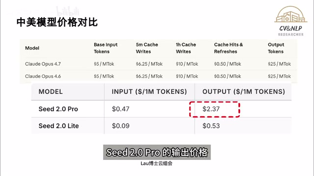
00:02:14–00:02:17 · 画面 04600:02:17–00:02:21 · 画面 047
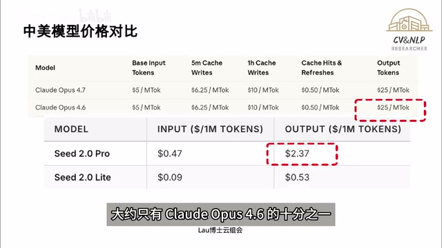
00:02:17–00:02:21 · 画面 047性能贴脸，价格只要十分之一，这件事的连锁反应才刚刚开始。
00:02:21–00:02:24 · 画面 048
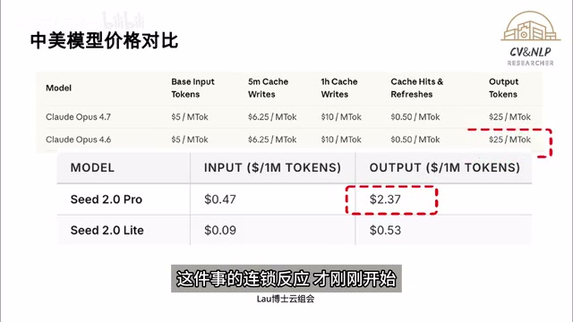
00:02:21–00:02:24 · 画面 04800:02:24–00:02:25 · 画面 049
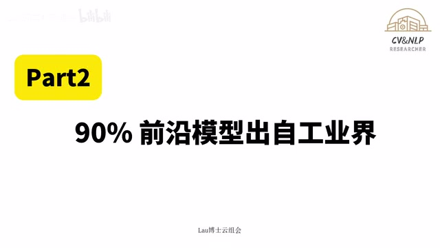
00:02:24–00:02:25 · 画面 049去年发布的 95 个最具代表性的模型里，超过九成都来自于工业界，不是学术机构，也不是高校实验室。不知道各位同学会不会觉得意外？很明显，现在学术界已经追不上前沿了。迭代节奏已经进入了月更，甚至是周更的时代。光是 2026 年 2 月一个月，就有 Claude Opus 4.6GLM5 等八九个旗舰模型同月入场。风神的周期从年变成了月。
00:02:25–00:02:29 · 画面 050
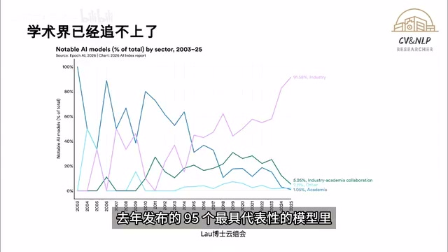
00:02:25–00:02:29 · 画面 05000:02:29–00:02:31 · 画面 051
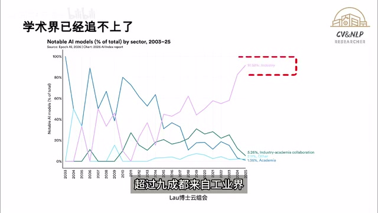
00:02:29–00:02:31 · 画面 05100:02:31–00:02:38 · 画面 052
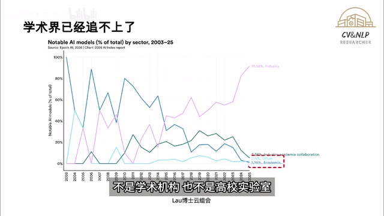
00:02:31–00:02:38 · 画面 05200:02:38–00:02:44 · 画面 053
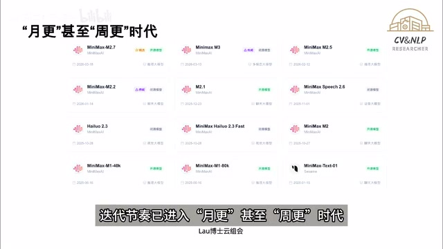
00:02:38–00:02:44 · 画面 05300:02:44–00:02:47 · 画面 054
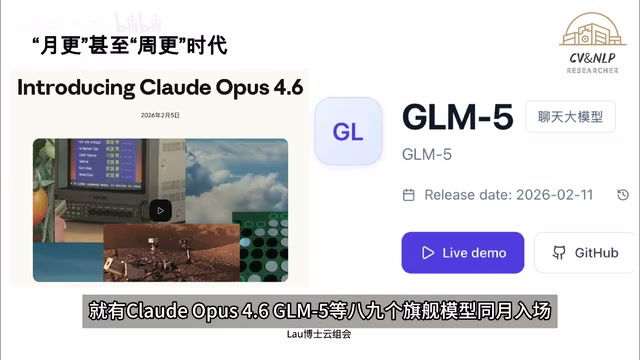
00:02:44–00:02:47 · 画面 05400:02:47–00:02:51 · 画面 055
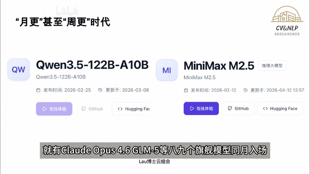
00:02:47–00:02:51 · 画面 05500:02:51–00:02:52 · 画面 056
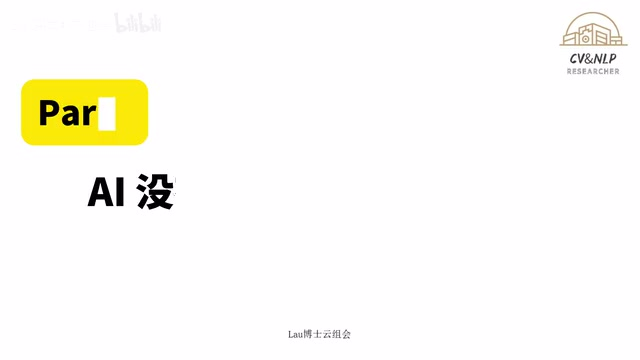
00:02:51–00:02:52 · 画面 05600:02:52–00:02:54 · 画面 057
00:02:52–00:02:54 · 画面 057大家猜猜看 AI 进步最快的领域是哪个没错是编程 SWE-bench Verified 这个真实修 bug 的基准一年时间从 60%涨到了接近 100%Terminal Bench 的测试 agent 处理真实终端任务的能力从去年的 20%涨到了 77.3%
00:02:54–00:02:58 · 画面 058
00:02:54–00:02:58 · 画面 05800:02:58–00:03:01 · 画面 059
00:02:58–00:03:01 · 画面 05900:03:01–00:03:05 · 画面 060
00:03:01–00:03:05 · 画面 06000:03:05–00:03:09 · 画面 061
00:03:05–00:03:09 · 画面 06100:03:09–00:03:12 · 画面 062
00:03:09–00:03:12 · 画面 062网络安全 Agent 解决的问题的成功率从 15%涨到了 93%Gemini DeepThink 在国际数学奥林匹克拿到了金牌。这些原本被认为人类不可超越的硬骨头全部被前沿模型啃了下来。最能说明问题的是 Humanity’s Last Exam，这是一个专门被设计来蓝导 AI 偏袒人类专家的测试。去年 OpenAI 的 OE 才拿到了 8.8%现在的 Claude Opus 4.6 和 Gemini 3.1 Pro 已经双双超过了 50%然而
00:03:12–00:03:16 · 画面 063
00:03:12–00:03:16 · 画面 06300:03:16–00:03:17 · 画面 064
00:03:16–00:03:17 · 画面 06400:03:17–00:03:19 · 画面 065
00:03:17–00:03:19 · 画面 06500:03:19–00:03:20 · 画面 066
00:03:19–00:03:20 · 画面 06600:03:20–00:03:25 · 画面 067
00:03:20–00:03:25 · 画面 06700:03:25–00:03:29 · 画面 068
00:03:25–00:03:29 · 画面 06800:03:29–00:03:30 · 画面 069
00:03:29–00:03:30 · 画面 06900:03:30–00:03:33 · 画面 070
00:03:30–00:03:33 · 画面 07000:03:33–00:03:34 · 画面 071
00:03:33–00:03:34 · 画面 07100:03:34–00:03:35 · 画面 072
00:03:34–00:03:35 · 画面 07200:03:35–00:03:37 · 画面 073
00:03:35–00:03:37 · 画面 07300:03:37–00:03:41 · 画面 074
00:03:37–00:03:41 · 画面 074有意识的情况出现了。最强模型在读模拟时钟这个任务的正确率只有 50.1%而人类则是 90.1%机器人在实验室仿真环境里的操作成功率已经达到了 89.4%但搬到真实的家庭场景里完成洗碗、叠衣服这类家务成功率立刻掉到 12%研究者把这种现象命名为锯齿前沿。
00:03:41–00:03:44 · 画面 075
00:03:41–00:03:44 · 画面 07500:03:44–00:03:46 · 画面 076
00:03:44–00:03:46 · 画面 07600:03:46–00:03:48 · 画面 077
00:03:46–00:03:48 · 画面 07700:03:48–00:03:49 · 画面 078
00:03:48–00:03:49 · 画面 07800:03:49–00:03:53 · 画面 079
00:03:49–00:03:53 · 画面 07900:03:53–00:03:55 · 画面 080
00:03:53–00:03:55 · 画面 08000:03:55–00:04:04 · 画面 081
00:03:55–00:04:04 · 画面 081AI 能力的分布是凹凸不平的，能拿数学奥帅的金牌却没法稳定的告诉你现在几点。在专门的评估科研逻辑的 PaperArena 的测试中，最强的 AI 加持的 agent 得分仅 38.8%而博士生则是 83.5%但这并不影响企业把 AI 往生产线上筛。报告给出的另外一个数字是全球企业的 AI 采用率达到了 88%九成的公司已经把 AI 接近了某个工作流。
00:04:04–00:04:11 · 画面 082
00:04:04–00:04:11 · 画面 08200:04:11–00:04:26 · 画面 083
00:04:11–00:04:26 · 画面 08300:04:26–00:04:37 · 画面 084
00:04:26–00:04:37 · 画面 084资本和领导们对 AI 的追捧已经接近了狂热，那代价就是 AI 相关的事故记录从 2024 年的 233 起涨到了 362 起。从 2021 年到现在，全球 AI 算力总量涨了 30 倍，过去三年里每年都在翻三倍以上。
00:04:37–00:04:44 · 画面 085
00:04:37–00:04:44 · 画面 08500:04:44–00:04:45 · 画面 086
00:04:44–00:04:45 · 画面 08600:04:45–00:04:48 · 画面 087
00:04:45–00:04:48 · 画面 08700:04:48–00:04:50 · 画面 088
00:04:48–00:04:50 · 画面 08800:04:50–00:04:52 · 画面 089
00:04:50–00:04:52 · 画面 08900:04:52–00:04:53 · 画面 090
00:04:52–00:04:53 · 画面 090撑起这条增加曲线的是谁？我想大家都能猜到，英伟达一加的 GPU 占据了全世界 AI 算力的 60%以上，亚马逊和谷歌靠自研芯片排在了第二、第三位，但加起来也远远追不上英伟达。而几乎所有的这些芯片都来自于一家代工厂，台积电。
00:04:53–00:04:57 · 画面 091
00:04:53–00:04:57 · 画面 09100:04:57–00:05:01 · 画面 092
00:04:57–00:05:01 · 画面 09200:05:01–00:05:02 · 画面 093
00:05:01–00:05:02 · 画面 09300:05:02–00:05:07 · 画面 094
00:05:02–00:05:07 · 画面 09400:05:07–00:05:08 · 画面 095
00:05:07–00:05:08 · 画面 09500:05:08–00:05:12 · 画面 096
00:05:08–00:05:12 · 画面 096同时代价也在加大。全球 AI 数据中心的总功率已经达到了 29.6GW，相当于纽约州在用电高峰时段的全部用电需求。xAI Grok 4 一期训练的估算碳排放是 72,816 吨二氧化碳当量，相当于 17,000 辆汽车开一整年的尾气。数据中心建在哪里，电从哪里来，芯片从哪里采，这三个问题已经变成了今年所有 AI 公司 CEO 最头疼的事情。
00:05:12–00:05:17 · 画面 097
00:05:12–00:05:17 · 画面 09700:05:17–00:05:22 · 画面 098
00:05:17–00:05:22 · 画面 09800:05:22–00:05:32 · 画面 099
00:05:22–00:05:32 · 画面 09900:05:32–00:05:41 · 画面 100
00:05:32–00:05:41 · 画面 10000:05:41–00:05:42 · 画面 101
00:05:41–00:05:42 · 画面 10100:05:42–00:05:43 · 画面 102
00:05:42–00:05:43 · 画面 102整份报告里最让中文观众沉默的可能是关于年轻就业的部分，22 到 25 岁的软件开发者群体从 2024 年至今就业人数下降了大约 20%
00:05:43–00:05:47 · 画面 103
00:05:43–00:05:47 · 画面 10300:05:47–00:05:48 · 画面 104
00:05:47–00:05:48 · 画面 10400:05:48–00:05:53 · 画面 105
00:05:48–00:05:53 · 画面 10500:05:53–00:05:55 · 画面 106
00:05:53–00:05:55 · 画面 106不止开发港客服等其他高 AI 暴露的行业也在出现同样的模式。根据报告中的企业问卷调查结果，受访的高管普遍预期未来的裁员幅度会比过去的几个月还要大。这不是宏观的失业率的事，是入口岗位被精确切掉的事，第一份工作没了，整个职业的阶段就断了一格。
00:05:55–00:05:58 · 画面 107
00:05:55–00:05:58 · 画面 10700:05:58–00:06:00 · 画面 108
00:05:58–00:06:00 · 画面 10800:06:00–00:06:07 · 画面 109
00:06:00–00:06:07 · 画面 10900:06:07–00:06:08 · 画面 110
00:06:07–00:06:08 · 画面 11000:06:08–00:06:13 · 画面 111
00:06:08–00:06:13 · 画面 11100:06:13–00:06:14 · 画面 112
00:06:13–00:06:14 · 画面 11200:06:14–00:06:17 · 画面 113
00:06:14–00:06:17 · 画面 113研究显示，2008 年金融危机期间毕业的人群，其长期的生涯成就显著低于繁荣期的毕业同龄人，差距可持续 10 到 15 年，甚至永久存在。生成式 AI 在 3 年内达到了 53%的全球人口渗透率，这个速度比个人电脑快，比互联网快，但渗透率的速度和国别的相关性极强，新加坡 61%
00:06:17–00:06:22 · 画面 114
00:06:17–00:06:22 · 画面 11400:06:22–00:06:23 · 画面 115
00:06:22–00:06:23 · 画面 11500:06:23–00:06:27 · 画面 116
00:06:23–00:06:27 · 画面 11600:06:27–00:06:29 · 画面 117
00:06:27–00:06:29 · 画面 11700:06:29–00:06:30 · 画面 118
00:06:29–00:06:30 · 画面 11800:06:30–00:06:33 · 画面 119
00:06:30–00:06:33 · 画面 11900:06:33–00:06:37 · 画面 120
00:06:33–00:06:37 · 画面 12000:06:37–00:06:53 · 画面 121
00:06:37–00:06:53 · 画面 121阿联酋 54%都跑在了美国前面美国在调查的覆盖国家中只排到了第 24 位渗透率是 28.3%是不是还挺反直觉的如果把维度从消费者换成职场反差了更大报告显示 2025 年全球 58%的员工在工作中已经开始经常性的使用 AI 但在中国、印度、尼日利亚
00:06:53–00:06:59 · 画面 122
00:06:53–00:06:59 · 画面 12200:06:59–00:07:00 · 画面 123
00:06:59–00:07:00 · 画面 12300:07:00–00:07:04 · 画面 124
00:07:00–00:07:04 · 画面 12400:07:04–00:07:06 · 画面 125
00:07:04–00:07:06 · 画面 125阿联酋、沙特这五个国家这个比例超过了 80%中国的职场 AI 渗透率已经比全球平均高出 20 个百分点以上 AI Index 估算到了 2026 年初生成式 AI 工具每年给美国消费者创造 1720 亿美元的价值从 2025 年到 2026 年每个用户的中位数价值翻了三倍但绝大多数用户用的还是免费版
00:07:06–00:07:11 · 画面 126
00:07:06–00:07:11 · 画面 12600:07:11–00:07:12 · 画面 127
00:07:11–00:07:12 · 画面 12700:07:12–00:07:15 · 画面 128
00:07:12–00:07:15 · 画面 12800:07:15–00:07:23 · 画面 129
00:07:15–00:07:23 · 画面 12900:07:23–00:07:24 · 画面 130
00:07:23–00:07:24 · 画面 13000:07:24–00:07:28 · 画面 131
00:07:24–00:07:28 · 画面 13100:07:28–00:07:35 · 画面 132
00:07:28–00:07:35 · 画面 132普通人愿意为 AI 付的钱远低于 AI 给他们创造的价值，这中间的剪刀叉是现在所有的 AI 公司都在试图理合的东西。OpenAI 早几年就被大家调侃是 CosAI，最强的模型正在变成了最不透明的模型。
00:07:35–00:07:36 · 画面 133
00:07:35–00:07:36 · 画面 13300:07:36–00:07:40 · 画面 134
00:07:36–00:07:40 · 画面 13400:07:40–00:07:41 · 画面 135
00:07:40–00:07:41 · 画面 13500:07:41–00:07:42 · 画面 136
00:07:41–00:07:42 · 画面 13600:07:42–00:07:48 · 画面 137
00:07:42–00:07:48 · 画面 13700:07:48–00:07:52 · 画面 138
00:07:48–00:07:52 · 画面 138Foundation Model Transparency Index 今年的平均分从去年的 58 分跌到了 40 分。报告直接点名 Google、Anthropic、OpenAI 都已经放弃公开最新模型的训练数据的规模和训练时长。去年发布的 95 个最具代表性的模型里，80 个没有公开训练代码。全球范围内认为 AI 力大于弊的比例从 55%上升到了 59%但同期对 AI 感到紧张的比例从 50%上升到了 52%
00:07:52–00:07:53 · 画面 139
00:07:52–00:07:53 · 画面 13900:07:53–00:07:55 · 画面 140
00:07:53–00:07:55 · 画面 14000:07:55–00:08:06 · 画面 141
00:07:55–00:08:06 · 画面 14100:08:06–00:08:18 · 画面 142
00:08:06–00:08:18 · 画面 142两个方向同时增长，最分裂的是美国，只有 33%的美国人认为 AI 会让自己的工作变得更好，全球平均是 40%美国人对本国政府的监管的 AI 的信任度是受访国家里最低的，只有 31%新加坡人对自己的政府监管的 AI 信任度是 81%最近 Sam Altman 的家被袭击的事件之后，硅谷圈内的人惊讶的发现评论区里的普通人的对此并不同情，甚至有人觉得应该更激烈一些。
00:08:18–00:08:22 · 画面 143
00:08:18–00:08:22 · 画面 14300:08:22–00:08:23 · 画面 144
00:08:22–00:08:23 · 画面 14400:08:23–00:08:25 · 画面 145
00:08:23–00:08:25 · 画面 14500:08:25–00:08:26 · 画面 146
00:08:25–00:08:26 · 画面 14600:08:26–00:08:36 · 画面 147
00:08:26–00:08:36 · 画面 14700:08:36–00:08:40 · 画面 148
00:08:36–00:08:40 · 画面 14800:08:40–00:08:46 · 画面 149
00:08:40–00:08:46 · 画面 14900:08:46–00:09:00 · 画面 150
00:08:46–00:09:00 · 画面 150报告引用的 Pew 和 Ipsos 的数据显示专家和公众在 AI 影响就业、医疗、经济这些维度上的观感差距普遍超过了 30 个百分点最大的一下达到 50 个百分点这就不得不提到那个名场面了一边是实验室里的曲线在飞涨一边是普通人心里的不安在累积
00:09:00–00:09:07 · 画面 151
00:09:00–00:09:07 · 画面 15100:09:07–00:09:08 · 画面 152
00:09:07–00:09:08 · 画面 15200:09:08–00:09:09 · 画面 153
00:09:08–00:09:09 · 画面 153横轴是时间 ，纵轴是能力，模型能力的曲线在飞刷，你的曲线在飞，投资的曲线在飞，财务率曲线在飞，其他全都在原地踏步或向下。这就是 2026 年 AI Index 的全部内容，AI 在加速，其他所有东西都在脱节。如果你是这个行业里的人，现在该问的问题不是未来会怎么样，而是自己站在哪一条曲线上，是那条向上的曲线还是那条向下的。
00:09:09–00:09:10 · 画面 154
00:09:09–00:09:10 · 画面 15400:09:10–00:09:14 · 画面 155
00:09:10–00:09:14 · 画面 15500:09:14–00:09:16 · 画面 156
00:09:14–00:09:16 · 画面 15600:09:16–00:09:17 · 画面 157
00:09:16–00:09:17 · 画面 15700:09:17–00:09:19 · 画面 158
00:09:17–00:09:19 · 画面 15800:09:19–00:09:23 · 画面 159
00:09:19–00:09:23 · 画面 15900:09:23–00:09:24 · 画面 160
00:09:23–00:09:24 · 画面 16000:09:24–00:09:26 · 画面 161
00:09:24–00:09:26 · 画面 16100:09:26–00:09:30 · 画面 162
00:09:26–00:09:30 · 画面 16200:09:30–00:09:31 · 画面 163
00:09:30–00:09:31 · 画面 16300:09:31–00:09:34 · 画面 164
00:09:31–00:09:34 · 画面 164OK，以上就是本期云组会的全部内容，如果你对 AI 感兴趣或想看更多硬核的解读，欢迎关注我们，成为云组会的一员。
00:09:34–00:09:36 · 画面 165
00:09:34–00:09:36 · 画面 16500:09:36–00:09:40 · 画面 166
00:09:36–00:09:40 · 画面 16600:09:40–00:09:41 · 画面 167
00:09:40–00:09:41 · 画面 16700:09:41–00:09:41 · 画面 168
00:09:41–00:09:41 · 画面 168转写与来源说明 · 0 个自动复核提示
保留 25 个原始语音片段，0 个片段触发自动复核提示。提示仅用于定位可能的术语、重复或识别问题，不等于已确认错误。
讲解画面为源视频截图（640×360），不是可编辑 PPT 文件。全片按每秒 2 帧扫描内容变化，逐步展开页保留；连续动画保留代表画面。清晰度受源视频限制。
原视频：paper/合集_2026-10-16_论文精读/【论文精读】国运之争！深度剖析《2026斯坦福AI报告》.mp4
SHA-256：2f420a7f4a13d516ce4418696100bc1f546d84301833bb42ddd8a2e46dd01482
全文按视频语音与画面制作。原论文可从上方链接下载；完整资料包保留全文、原始逐字稿、字幕和校对记录。